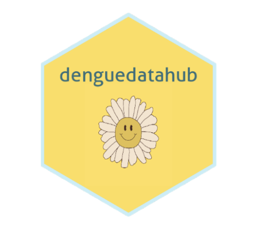

The Dengue Data Hub, an ambitious initiative funded by the R Consortium ISC, transforms how researchers access and utilize dengue-related data. At its core, the Dengue Data Hub aims to provide a centralized repository for dengue incidence, mortality, and risk-related data, streamlining the research process and empowering scientific inquiry into this global health issue. The platform offers easy access through the denguedatahub R package, a Shiny app, and an informative website, making data analysis more efficient and accessible.
Please note: denguedatahub version 2.1.1 was published on CRAN on Sep 22, 2024.
Dr. Thiyanga Talagala, a Senior Lecturer at the University of Sri Jayewardenepura in Sri Lanka, spearheads this initiative. With a PhD from Monash University, where she honed her skills in R programming and data science, Dr. Talagala is deeply passionate about leveraging her expertise to address Sri Lanka’s public health challenges, particularly dengue. Together with her sister, Dr. Priyanga Talagala, she co-founded the R-Ladies Colombo group and has been instrumental in bringing innovative solutions to the scientific community. Dr. Talagala’s commitment to enhancing dengue research through accessible data resources is central to her ongoing work, making the Dengue Data Hub a vital tool for researchers worldwide.
Tell us about your background and how it connects to the Dengue Data Hub project
Currently, I am working as a Senior Lecturer, Department of Statistics, Faculty of Applied Sciences, University of Sri Jayewardenepura, Sri Lanka. I earned my PhD from Monash University, Australia. During my time at Monash University in Australia, I was part of the NUMBAT research group, where I developed a deep interest in the R programming language and discovered its incredible potential for data analysis and research. I also had the opportunity to meet and collaborate with leading experts in the field, which further fueled my passion for R and data science. I also got to know about the R Ladies community, and I attended events organized by R-Ladies Melbourne.
Once I returned to Sri Lanka after completing my PhD, I felt a strong desire to contribute to my country using the knowledge I had gained. I, along with my Sister, Dr Priyanga Dilini Talagala (we both did our PhDs together at Monash University), established the R Ladies Colombo meetup group.
Dengue is a major public health issue in Sri Lanka. As a data scientist, I can contribute to its mitigation by establishing a centralized repository for dengue data for data analysis and modeling, which empowers dengue research. This project was funded by R Consortium ISC 2022 - 1 Grant and I have been working on it since 2022.
What is the Dengue Data Hub?
The Dengue Data Hub is a centralized repository that provides access to a variety of data sets related to dengue incidence and other relevant factors. This includes data on dengue deaths, reported cases, indigenous cases, local cases, dengue serotypes, breeding sites, and country-wise levels of risk. I have data related to annual dengue incidence for 195 countries around the world.
Why is this project important for the research community?
Dengue researchers often spend their valuable time searching for datasets, web scraping and cleaning data. The publication of data in a centralized repository helps to prevent duplicate efforts. The dengue data hub enables the community to focus on analysis and modeling rather than data collection and cleaning. Additionally, it enhances research sustainability by allowing researchers to utilize data for their studies while preserving it for future researchers.
How do researchers use the Dengue Data Hub?
There are three straightforward ways for anyone to participate. Use the denguedatahub R software package, use the Dengue Data Hub Shiny app (for non-programmers), or use our website which provides tutorials and examples.
- Use the denguedatahub R software package.

The denguedatahub R package allows researchers to download dengue-related data easily. For Sri Lanka, it includes web scraping functions that directly retrieve weekly epidemiological reports published by the Epidemiology Unit, Ministry of Health, Sri Lanka. This functionality also cleans the data into a tidy format. Additionally, the package offers various data manipulation functions tailored for dengue data visualization and modeling. You can find the package on GitHub at https://github.com/thiyangt/denguedatahub.
- Dengue Data Hub Shiny app
The Shiny app provides an interface for non-programmers to access dengue data. It is available at: https://denguedatahub.shinyapps.io/denguedatahub/
- Website (https://denguedatahub.netlify.app/)
This website is the home for the projects. It provides tutorials and examples. The site was developed using Quarto.
What impact do you hope the Dengue Data Hub will have?
My hope is that the Dengue Data Hub will become a go-to resource for dengue researchers globally. I believe the hub will accelerate dengue research and discoveries which will help in developing effective strategies to combat dengue. The dengue data hub also serves as a
teaching tool for data science and statistics, as it includes comprehensive data sets.
Do you have any final thoughts or messages you’d like to share with the research community?
I invite dengue researchers worldwide to collaborate on this project. I do not have access to clinical trial data, so contributions in that area would be especially valuable. We are looking to expand the datasets available, as comprehensive data sharing is essential for advancing our collective understanding of dengue epidemiology. Additionally, we welcome contributions of data, analytical tools, and insights that can help strengthen the hub’s capacity to serve as a central resource for researchers globally.
You can learn more about how to collaborate here. We can build a stronger network to enhance dengue research and response efforts worldwide.
About ISC Funded Projects
A major goal of the R Consortium is to strengthen and improve the infrastructure supporting the R Ecosystem. We seek to accomplish this by funding projects that will improve both technical infrastructure and social infrastructure.